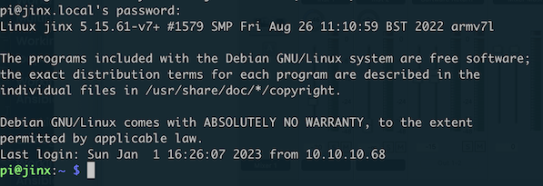

Step 3: Gaining Access to the Access Point
Gaining Access
Prerequistes
You should read this section if you have identified the answers to the following questions from section 1:
- What is the ip address of the device you are using to connect to the wifi network?
- What is the default gateway for the wifi interface of the device when it’s attached to the wifi network?
- What service numbers & corresponding protocols did you discovered on the target system?
Your Objectives:
- Use a tool to connect to the ssh port of the raspberry pi’s ip address.
- Guess the password of the system
- Gain access to the system
You are ready for the next activity when you see a login screen that looks like this:

Tips: What do we know?
We know the address of the hotspot and we know that there are some open ports on that address. How do we know the address of the hotspot?
You have successfully completed a scan of the target. Your scanner might have given you hints as to what the services are for- but these service names are not always reliable. You can consider it a clue, but let’s learn how these tools infer the name of a service.
Default Gatway
The default gateway is the Internet Protocol address assigned to the access point’s wifi interface. When you found your device’s default gateway, you found the address of the system you are going to target.
A default gateway connects a network to the Internet. It is the host your phone/pc sends data through to connect to the Internet. If you’re on a wifi network that works, there is a default gateway. If you’re on a mobile network that works, there is a default gateway. Every network has it’s own gateway.
In the current hotspot state, the device is not attached to the Internet. It’s still cool though! For example- the default gateway hosts this very cool web page!
Listening ports
You also know some port numbers that seem to be listening. A port number is like an apartment number or PO box address. You can think about port number like an apartment building address. An apartment complex has a single shared address on some street:
To: Patrick 420 Paper St. Wilmington DE 19886
But if you want to send a letter to a specific family, you have to specify an apartment number. Everyone at the building has the same address, but each family has their own apartment number.
To: Patrick 420 Paper St. Apartment 33 Wilmington DE 19886
Port numbers like apartment numbers. They are specific to process which accepts connections on the target system. If you want to interact with the target system, you have to specify the port you’re connecting to. If there is no service listening on that port, you won’t be able to connect. An attacker must:
- specify the IP address of the system they want to perturb
- specify the port that they are attaching to on that system
- and use a client that speaks the service’s protocol to work with the service.
We know an address and we know some ports. Let’s learn about what’s going on for those ports so we can develop a plan for gaining access to the system.
Learning about entry points
Your scanner might report service names discovered on the system. These scanning tools are not always accurate. You can consider it a clue, but you should assume only the port numbers are right. Let’s learn how these tools infer the name of a service.
The Internet Assigned Numbers Authority (iana.org) is responsible for the authoritative standards of how numbering is assigned in internet services. They publish a web site that hosts these materials. https://www.iana.org/assignments/service-names-port-numbers/service-names-port-numbers.xhtml
-
Browse to the iana website.
-
Search for the port numbers you found to discover what kinds of services you discovered. Search for the possible “service name” that corresponds to the port number.
-
The service might have a reference RFC listed. Click on it to learn more about the service assigned to that port number. Be sure to read the section called Abstract for a quick review of its objectives. Scan through the table of contents to see if there are any topics that look interesting to you. It might be useful to look into any sections labeled ** Security Properties , ** Security Considerations ** and the word ** Authentication.
By now you should have discovered a few services on the target system. You should research the names of the services you’ve discovered. These are all the ways we can gain access to a system without needing physical access to it. The “Threat Surface” is the list of all possible entry points into a system.
Attaching to an http entry point
You need to use the correct client to attach to an entry point. If a service provides http or https support, you can use a web browser to attach to it. You can use the ip address of the system, plus the port number to attach.
For an http session, you would connect to http://[Default Gateway IP]:[Port Number]. E.g. http://10.10.10.1:80
HTTPS sessions are typically hosted on port 443. So in that instance you’d connect to http://10.10.10.1:443.
The IANA list is generally followed- but you cannot depend on a mapping of a port number to a specific service. Clever sysadmins can host any service they want on a port. This means that service listening on port 80 may not be an http server. You can only confirm this by connecting to it with the correct client.
Attaching to an ssh entry point
Hackers identify all opportunities to tamper with data processed by a targeted asset. Hackers find services that are “listening” for packets. A listening service will accept packets sent by a hacker. If you find listening services, you’ve found a potential entry point.
Often, we can get by with basic techniques like guessing user accounts and passwords. Secure systems use sophisticated authentication that makes guessing or stealing a credential impossible. For those systems, we must explore more advanced techniques. This challenge is easy enough that we won’t worry about that approach for now.
On a mobile device, you can use the prompt app to ssh into a system. You’ll have to load it up and put the address you identified for the hotspot into the server address and specify port 80. You’ll also have to specify a user name and a password. This is where you should start doing some research.
- What is a common username for the Raspbian operating system?
- What passwords are commonly used?
Anecdotes
There are two organizations that define significant standards for the Internet. These are the Internet Engineering Task Force (IETF) and the Internet Assigned Numbers Authority (IANA). The IETF publishes documents called Requests for Comments (RFCs). The RFCs are written by communities of engineers who collaborate to define the design of a protocol. They articulate how various things on the internet should work. This material is then used as a guide by software developers who implement the code that should produce various experiences. Reading an RFC can tell you how things are supposed to work. But the only way to know for sure how a certain program ACTUALLY works is to look at it’s code. Luckily, you do not need to learn to code to get started. But if your goal is to be an effective and influential security engineer, you must be able to read & contribute code.